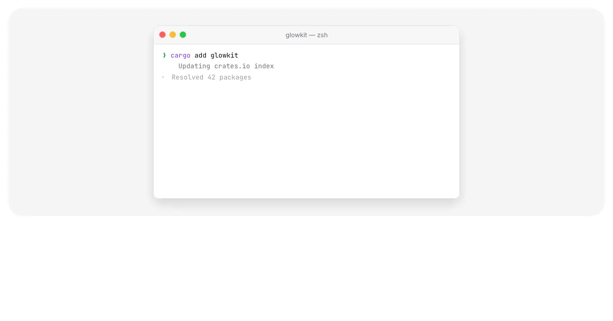

Terminal
A macOS terminal window that types out commands, then reveals output line by line with spinners that resolve to check marks.

Usage
Add glowkit next to eframe:
cargo add glowkit eframeThen draw it inside any egui Ui:
use glowkit::prelude::*;
use glowkit::blocks::{Terminal, TerminalLine};
ui.add(Terminal::new()
.title("glowkit — zsh")
.line(TerminalLine::command("cargo add glowkit"))
.line(TerminalLine::output(" Updating crates.io index"))
.line(TerminalLine::spinner("Resolving dependencies", "Resolved 42 packages"))
.line(TerminalLine::success("Added glowkit v0.1.0"))
.line(TerminalLine::command("cargo run --release"))
.line(TerminalLine::success("Your app is glowing ✨")));Prefer to own the code? The glowkit CLI copies this component's source into your project, shadcn-style:
cargo install glowkit-cli
glowkit add terminalEquivalent to
If you know this pattern from Magic UI and Aceternity, Terminal is the Rust version: an original egui implementation, not a port, that runs natively and in WebAssembly.
- TerminalMagic UI
- TerminalAceternity
About Terminal
Terminal is one of 15 components in glowkit's Data Display category. It lives in the glowkit-blocks crate, enabled by the blocks feature of glowkit (on by default). It reads its colors from the active glowkit theme, so it matches the rest of your app in light, dark or a custom brand theme, and every color, size and timing has a setter to override it.
Ways to show information: data tables, timelines, stat cards, tree views, syntax-highlighted code blocks and diffs, terminals, globes, avatar groups and empty states.